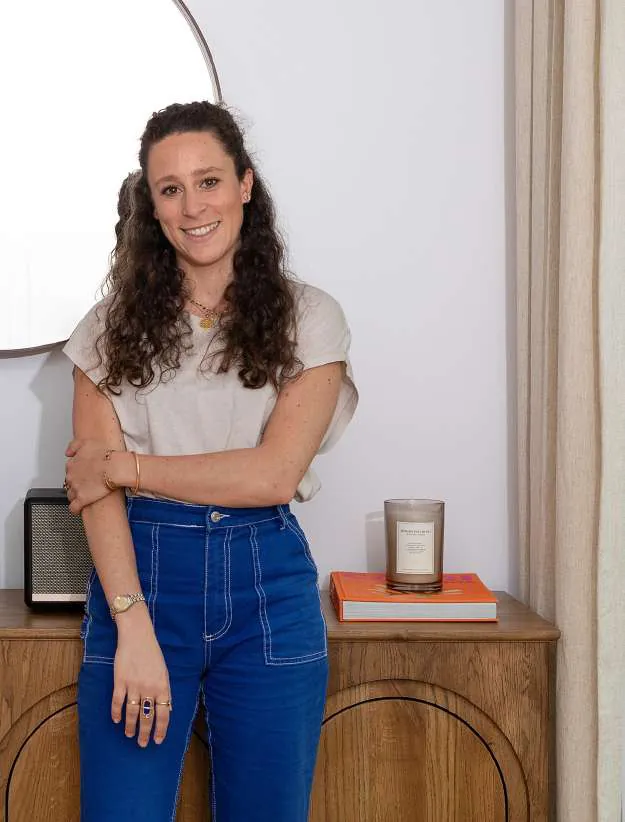

Stouls Studio / About
Margaux Stouls Interior architect and designer
Stouls Studio is me. The person you meet at the first appointment is also the one who draws your plans, supervises your job site and sees the project through to the last detail.
I trained in both interior architecture and product design, so I like to think of a project as a whole: the way you move through an apartment, the light, the proportions, but also the drawing of a piece of furniture, the choice of a material or getting a finish exactly right. That dual training lets me move naturally from the overall vision to the details that give a place its character.
I founded Stouls Studio in 2019 to design interiors that are personal, good to live in and suited to the people who live in them. Since then, I have worked on more than 60 projects, from design to site supervision.
Today I work both with people who want to find their apartment in Paris from abroad and with those who want to rethink a place they already live in. For the former, I am their eyes on the ground: I search, I visit, I share what I find and I imagine what each property could become. For the latter, I turn their wishes into a concrete project, made to measure and supervised on site.
In both cases, my approach is the same: listening, understanding the way you live and revealing the potential of a place, to make it an interior that feels like you.
How I work
- One client-facing person, start to finish.
- Quotes shown in full. You contract with the trades directly.
- Decisions put to you with a picture and a price.
- Paris only, so I can be on site.
What an interior architect does in France
An architecte d'intérieur redesigns the inside of a building: where the walls, kitchen and bathrooms go, how the rooms are lit, what everything is made of. She draws the plans contractors build from and manages the site.
| Who | What they do |
|---|---|
| Interior architect | Layout, technical drawings, materials, lighting, millwork, contractors and site management. |
| Decorator | Furniture, color, fabrics and styling, without changing the layout or the services. |
| Structural engineer | Calculates and signs off any change to a load-bearing wall or floor. Brought in when the plan needs one. |
| Buyer's agent | Searches and negotiates the purchase. Their work ends when you sign. |
I do the first two for you, bring in the third when the plan requires it, and search for the apartment so that the fourth step and the renovation are judged together.
What I do not do
- Tax or legal advice. Your notaire and a cross-border tax adviser cover that.
- Rental management. I hand the finished apartment to the manager you choose.
- Hold your money. The notaire holds the purchase funds, and you pay contractors directly.
Common questions about the purchase itself are answered in the buyer's guide, and the French vocabulary in the glossary.